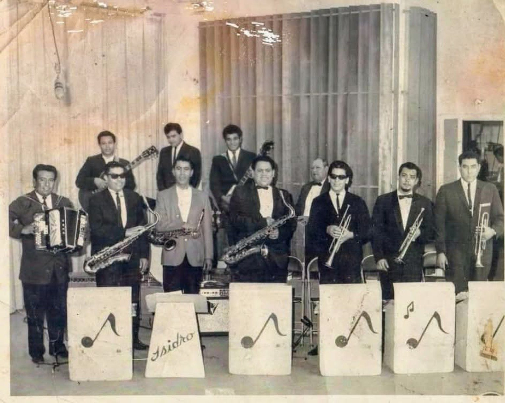
Photographs
Band photos, family collections, dance halls, recording sessions, and candid moments.
A nonprofit in formation
Viva Tejano Cultural Arts Foundation is documenting the musicians, families, photographs, posters, recordings, venues, and memories that shaped Tejano music and Chicano culture.
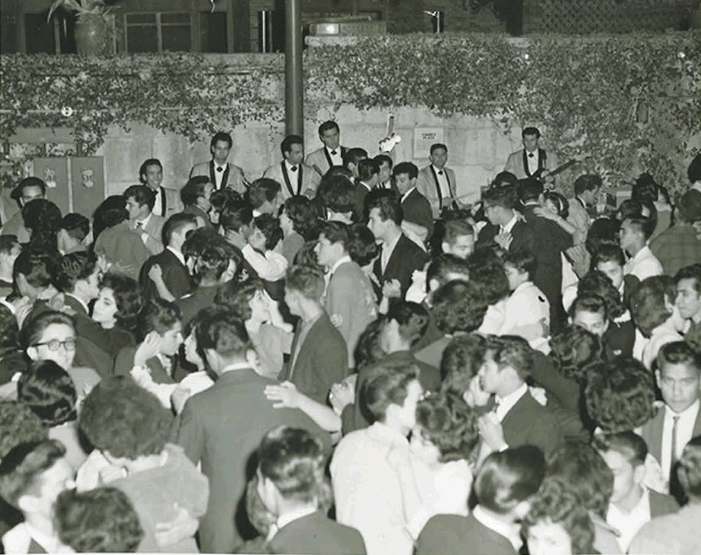
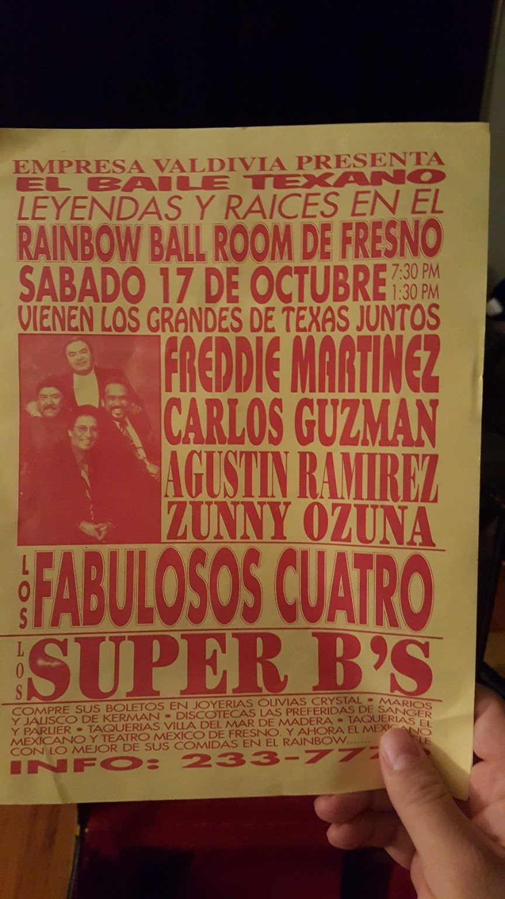
Who We Are
Viva Tejano Cultural Arts Foundation was created to preserve, document, and celebrate the people behind Tejano music—artists, musicians, promoters, photographers, families, fans, venues, and communities.
Our first public initiative is Viva Tejano Musician Documentation Day, a community-centered effort to collect stories, identify photographs, digitize materials, and begin building a lasting archive for future generations.
First Initiative
July 26 · 2:00–7:00 PM
Guadalupe Theater · San Antonio, Texas
Bring your photos, posters, records, flyers, newspaper clippings, stories, and memorabilia. We will begin documenting and preserving the history held by musicians, families, and community members.
The signup button can be replaced with your Google Form link when it is ready.
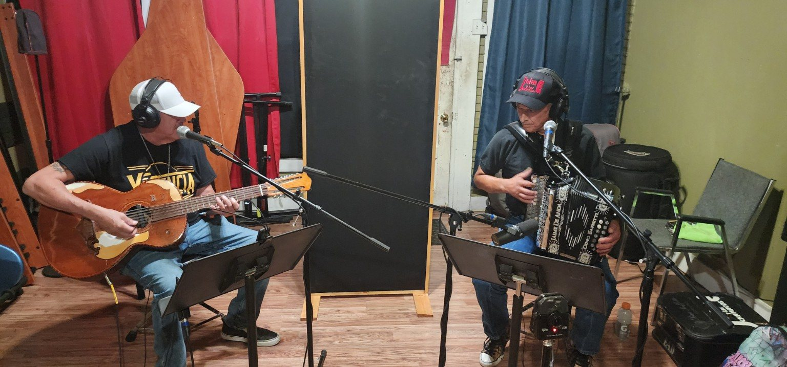
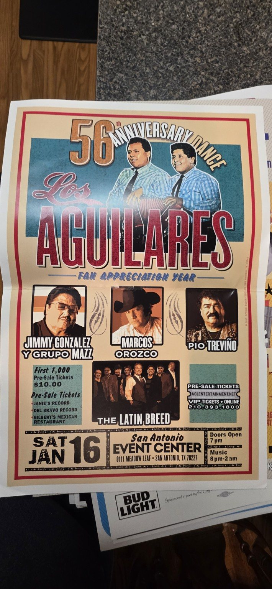
The Archive Begins Here
Every photograph has a story. Our goal is to preserve not only the image, but the names, places, dates, relationships, and memories connected to it.

Band photos, family collections, dance halls, recording sessions, and candid moments.
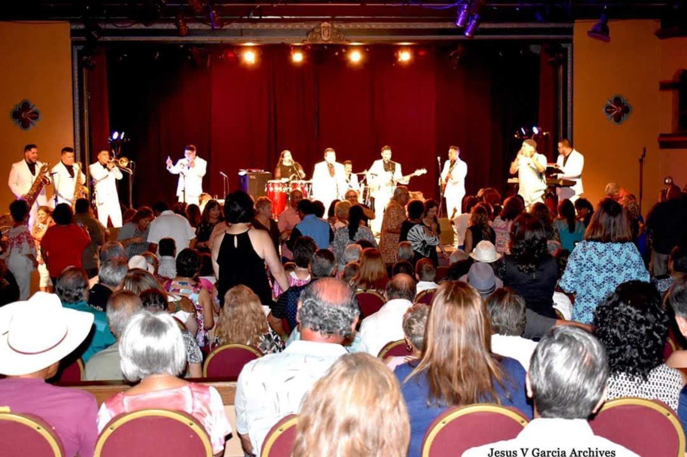
The crowds, venues, and neighborhoods that kept the music alive.
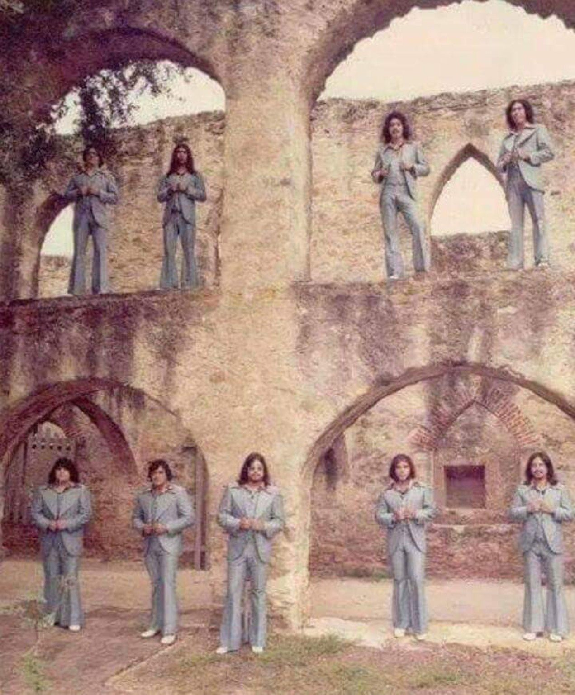
Musicians, bands, singers, arrangers, producers, and culture bearers.
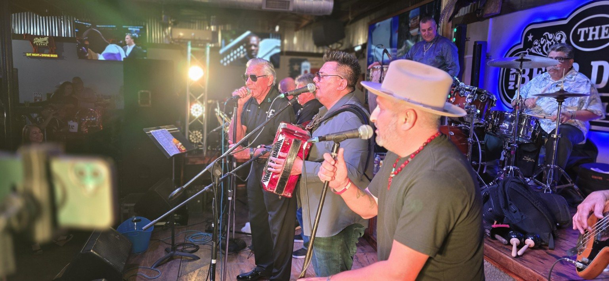
Connecting the early pioneers with the musicians carrying the sound forward.
Why It Matters
Viva Tejano exists to help families and musicians preserve these materials now—while the stories can still be told, the faces can still be named, and the music can be connected to the people who made it matter.
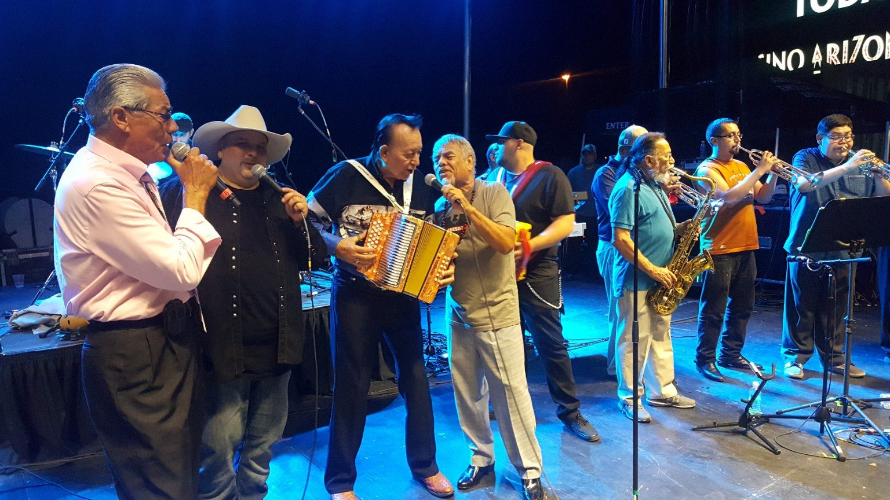
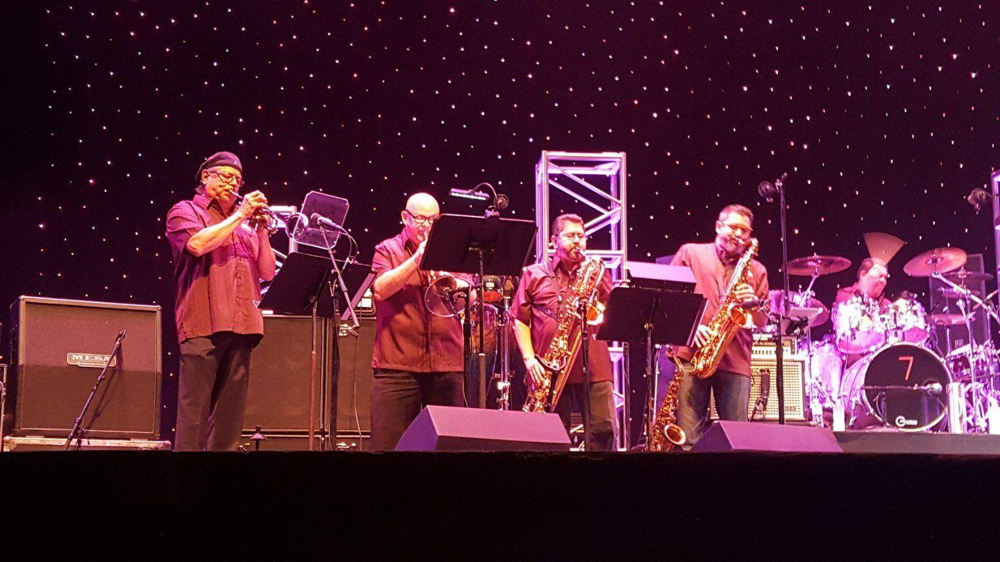
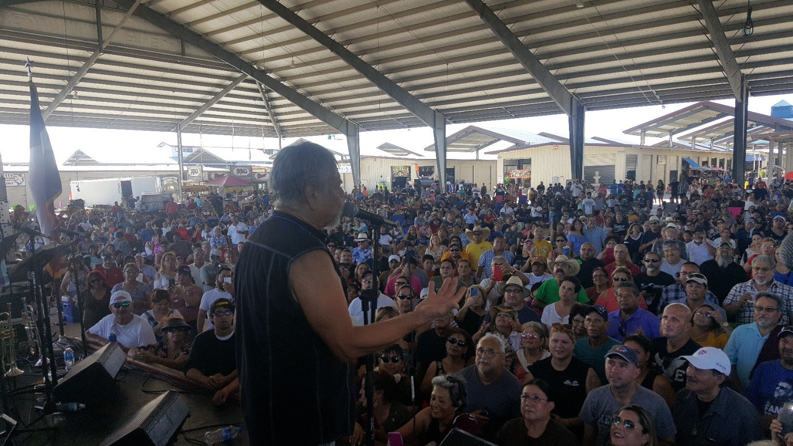
Get Involved
Have photographs, posters, recordings, memorabilia, or stories connected to Tejano music? Reach out and be part of the beginning.